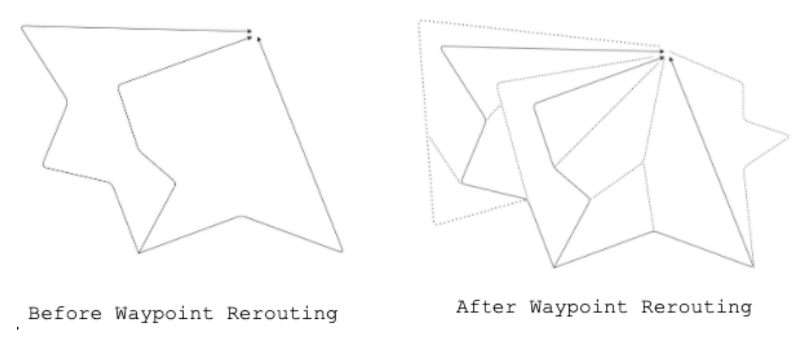

Saarathi
Saarathi is a mobile application developed as a social welfare initiative in response to COVID-19 in India. The app aims to ensure the safety of the Indian population during the COVID-unlock phase by providing navigation solutions. After India's strict lockdown, the app addresses the challenge of navigating safely amidst the current precarious situation by pinpointing COVID-prone areas using six versatile factors. It utilizes comprehensive algorithms to assess routes and guide users safely to their destinations. The app draws an analogy to Krishna guiding Arjun in the Mahabharata, symbolizing its aim to steer people away from dangers posed by COVID. Saarathi's focus is on aiding individuals in navigating the new normal while staying safe. The app is available for download and aims to support the community in these challenging times.
ALGORITHMS
Routing - Waypoint Routing
The traditional problem with routing is that it is difficult to provide a complete solution because routing engine services only provide the best paths (time-wise) and this makes it miss the route which might have been the safest. Using the Google API, for example, we get only 3 routes maximum. To get all possible routes between the origin and the destination, we use a recursive algorithm - we reroute on waypoints. This means that on a given route, we try to find new directions on every turn. So, when one route would have just had us take a left on a turn, query the routing engine for new directions from that turn's location again and see if it considers going straight and turning right as possibilities too. If yes, we add those to our list of routes. This leads to an exponential rise in the number of routes.
Population Density Algoritm
Population Density algorithm uses data from EU's GHSL calculations which estimates population density based on satellite imaging and India's census surveys. This data gives us a high resolution which yields data for tiles as small as 0.07 square kilometers. Along each route, we evaluate every point on the road and assign it a population density danger rating. It is notoriously difficult to understand how danger rises with increase in population density, so we instead started mapping how change of danger increases with increase in population density. A bell curve perfectly describes how danger changes with increase in population density - the increase is not high at start, it keeps increasing till a high point and then, after the population density becomes extremely high, it becomes so saturated that increase in number of people has no effect on danger.
Let danger be represented by 'D' and population density be represented by 'P': \[ \frac{dD}{dP} = \frac{K \cdot e^{-((P-b)^2/2a^2)}}{a \cdot \sqrt{2 \pi}} \] where \(K = 4500000000\), \(a = 18800\), \(b = 30000\) \[ \ ⇒ int dD = \int \frac{K \cdot e^{-((P-b)^2/2a^2)}}{a \cdot \sqrt{2 \pi}} \cdot dP \] \[ ∴ D = 2.25 \cdot \text{erf} \left(\frac{P - 3000}{2000 \cdot \sqrt{2}}\right) \] After normalization to a range from 0 to 1: \[ D = \frac{2.25 \cdot \text{erf} \left(\frac{P - 3000}{2000 \cdot \sqrt{2}}\right) + 1.949}{3.1795}, \quad \forall P \in \mathbb{R} \] We input the population density at a point in this formula to get the associated danger with it scaled between 0 and 1. After obtaining ratings for individual points, we combine the ratings of all points along the route to achieve the final rating.
Covid Points Algorithm
This algorithm uses district-wise data for COVID cases made public by the government to keep people away from infested areas. We use a simple equation for calculating the district's threat.
\[ \text{District's COVID threat (DCT)} = \frac{\text{total district cases}}{\text{district population}} \]
Each point along the route is assigned a rating depending on the district they are in. But, because of the increasing number of COVID cases, it will become difficult for this algorithm to remain functional on an absolute scale. To make sure it keeps functioning, we normalise the DCT by the highest DCT of any point along the route. This makes Covid Points a comparative algorithm rather than an absolute one.
\[ \text{Point's Rating} = \frac{\text{DCT}}{\text{DCT}_{\text{max}}} \]
After obtaining ratings for individual points, we combine the ratings of all points along the route to achieve the final rating. Refer to the section on Rating Combination and Addition for reading more about the process.
Point Avoid Algorithm
Thousands of coordinates across India describing the location of hospitals, public transport spots, non-sanitary areas, etc. are taken and the algorithm drives the user away from these hotspots. We assign all hotspots a weightage according to how dangerous they are (the more the danger, the higher the weightage). To evaluate one point along the route, we first sum up the danger effect on that point from every hotspot in the vicinity and then, we fit the answer to a logistic model to scale answers from 0 to 1. Mathematically,
\[ \text{DangerEffect}(DE) = \frac{Weightage(W)}{distance\ between\ two\ endpoints\ of\ hotspot(r)^2 \times n} \] \[ \text{Danger Effect Sum (DES)} = \sum_{i=1}^{n} DE_i \] Finally, \[ \text{Danger Rating} = \frac{1}{1 + e^{-0.02(DES - 150)}} \]
After obtaining ratings for individual points, we combine the ratings of all points along the route to achieve the final rating. Refer to the section on Rating Combination and Addition for reading more about the process. To increase time efficiency of the algorithm, we geohash all locations; this means that we divide India into small area-wise sectors and assign codes to locations based on what sector, sub-sector, sub-sub-sector (and so on) they are in. Only those locations which are in the vicinity of a point are accessed for calculations. Also, to increase iteration speeds through these geohash codes, we arrange them into a dictionary and train the computer to read these hashes like a human would read a dictionary.
Containment Zones Algorithm
Containment zones fetches data from government sites to analyse which areas have been declared as a containment zone. The algorithm identifes if a path is inside a containment zone. If yes, it eliminates that route from consideration. Using ray casting, we find if a point lies in a polygon that demarcates the containment zone. To do this, we keep track of how many intersections are there between a ray casted from our point and the lines of each polygon. Let this number be I.
Here is the logic: \[ f(N) = \begin{cases} \text{if } \sum_{n=1}^{N} I_n \mod 2 = 1, & \text{Containment Zone} \\ \text{else} & \text{not in Containment Zone} \end{cases} \]
Traffic Algorithm
We continuously update (every 10 minutes) a database that contains data of all the roads of India. We query the data for roads that lie on our route and assign the points on that road the rating for that road. Simply,
\[ \text{Point Rating = Road Rating = Jamming Factor / 10} \]
Jamming factor (JF) is a factor between 0 and 10 which tells how jammed a road is. After obtaining ratings for individual points, we combine the ratings of all points along the route to achieve the final rating. Refer to the section on Rating Combination and Addition for reading more about the process.
Temperature & Humidity Algorithm
The rate of coronavirus transmission, often indicated by the R-value (the number of infections caused by one infected person), is influenced by temperature and humidity. As temperature rises and humidity decreases, the virus transmission rate generally slows down.
\( R_t = e^{(\gamma - \delta \cdot T_c)} \)
Where:
\( \gamma = 0.752038698 \) (constant for \(T_c\) between <=92 and >= -20)
\( \delta = 0.01732867958 \) (constant)
\( R_h = e^{(\alpha - \beta \cdot H)} \)
Where:
\( \alpha = \begin{cases} 0.89323534577778 & \text{(constant for } H \text{ between <13 and >= 5)} \\ -3.6043653412 & \text{(constant for } H \text{ between >=13 and <=15.5)} \end{cases} \)
\( \beta = \begin{cases} 0.051344235555556 & \text{(constant for } H \text{ between <13 and >= 5)} \\ 0.2772588724 & \text{(constant for } H \text{ between >=13 and <=15.5)} \end{cases} \)
These relationships are derived from loess models adapted from a study on COVID transmission patterns, tailored to fit Indian spread patterns.
\( \text{Absolute Humidity} = 2.16679 \cdot \left(\frac{{P_w \times 100}}{{T}}\right) \)
Where:
\( P_w \) is the water vapor pressure
\( T \) is the temperature
\( \text{Final Risk Rating (Temperature)} = f(-16.766 + 38.91 \cdot R_t) \)
\( \text{Final Risk Rating (Humidity)} = f(-50.0001 + 50.0003 \cdot R_h) \)
The temperature and humidity factors were weighed (in a ratio of 2.5:1) to determine the cumulative Final Risk Rating on a scale of 0 to 100, indicating the conditions' impact on coronavirus transmission.
Rating and Combination Algorithm
Four of the algorithms find point rating but need to integrate all point ratings together to get a route
rating. Here's how we do that. We plot a frequency distribution using rating brackets of 0.005 on the
x-axis. Using a regression model, we make a probability density function from the data we have for all
points and find an expected value from it:
\[ Expected Value(E) = \int Rating \times Frequency \cdot d({rating}) \]
Finally, we factor in the distance, DIST, to give higher danger ratings to routes. It has a 30% importance in the combination process.
\[Final Danger Rating (FDR) = 7E/10 + 3/10 \cdot ( 1 - e^{(q/288)})\]
Where q is the number of ratings in the route Finally, to get the safety rating, we subtract the Danger Rating from 1:
\[ \text{Final Safety Rating} = 1 - FDR \]
Integrated Algorithm
Integrated Algorithm To understand how much weightage we want to give to each algorithm, we use artificial intelligence. We created a lot of test data where we, backend developers, picked between two routes with arbitrary values for all of the 6 algorithms. As we kept picking between the two routes, the AI system understood how much importance was given to each algorithm and finally outputted a percentage importance for each algorithm.
Senior Guidance & Contributors

Pragyan Pandey

Garvit Gowswami

Resham Talwar

Kunaal Gautam